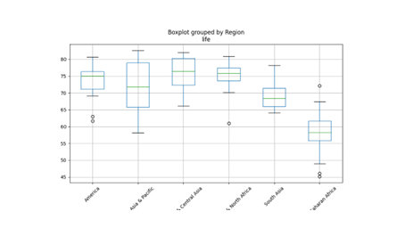

Desarrollo Python
Como Desarrollador Junior Python con un solido entendimiento
y aplicación del paradigma de Programación Orientada a Objetos (POO),
ofrezco servicios de desarrollo de software centrados en el
Análisis de Datos y Análisis Espacial por medio de
Sistemas de Información Geográfica (SIG)
Análisis de Software
Estas son las principales acciones que realizo:
- Recopilación y Levantamiento de Requisitos
- Documentación Clara y Modelado Visual
- Gestión de Comunicación Inter-equipo
- Validación y Soporte de Pruebas
Analista de Software
Recopilación y Levantamiento de Requisitos
Mi experiencia trabajando en sistemas no solo radica en la codificación de algoritmos,
sino también en la comprensión profunda de las necesidades del negocio y con ello la traducción de
estas necesidades en soluciones tecnológicas, sirviendo como puente que conecta la visión del cliente
y la implementación técnica.
Ofreciendo los siguientes servicios:
- Recopilación y Levantamiento de Requerimientos
Realizo entrevistas y levanto requerimientos, colaborando con el cliente para desarrollar la idea de sistema que tiene en mente y que necesita, analizo los requerimientos y defino los stakeholders que se deberán cumplir para cumplir con los objetivos de su negocio

Documentación Clara y Modelado Visual
Traslado los requerimientos en Documentos estructurados y comprensibles, tanto para el equipo de desarrollo como para el cliente, dentro de los que se encuentran:
- Casos de Uso
- Historias de Usuario
- Especificaciones Funcionales
- Diagramas de Flujo, Diagramas NS, Pseudocodigo
- Diseño Lógico de Soluciones y Flujos de Experiencia
Dentro mis servicios como analista propongo estructuras lógicas de soluciones defino la arquitectura funcional y los flujos de experiencia de usuario (UX), creando prototipos conceptuales que visualizan cómo el usuario interactuará con el software.

Gestión de Comunicación Inter-equipo
Dentro de mi experiencia trabajando en equipos de desarrollo he actuado como enlace central entre los equipos de desarrollo y calidad, facilitando reuniones, resolviendo dudas y asegurando que todos los actores del proyecto estén en la misma sintonía.
Validación y Soporte de Pruebas
Colaboro con el equipo de calidad en definir y realizar escenarios y casos de prueba, asegurando que el producto final cumpla con los requisitos y expectativas inicialmente definidos.

Programación Python (POO)
Estas son las principales acciones que realizo:
- Resuelvo problemas mediante la programación
- Programación Orientada a Objetos
Programación Orientada a Objetos
Resuelvo problemas mediante la programación
En mi experiencia como desarrollador aplico las siguientes fases para resolver problemas especificos mediante la programación
- Defino el problema
- Analizo el problema
- Los datos de entrada
- Cual es la información que deseo producir
- Los metodos y formulas que se necesitan para producir esta información
- Diseño el Algoritmo
- Codifico
- Pruebo y Depuro
Problematizo las necesidades del cliente de manera clara y precisa, para conocer lo que deseo que realice la computadora
Una vez comprendido lo que deseo que haga la computadora, defino:

Como guia grafica diseño un algoritmo que me ayude a codificar

Mediante el lenguaje de programación Python escribo la solucion del programa siguiendo los pasos de mi algoritmo previamente diseñado, mediante una serie de instrucciones detalladas, realizando documentación interna

Teniendo en cuenta que los errores existen y aumentan con la complejidad del problema, identifico y elimino estos errores, para dar paso a una solución sin errores

Programación Orientada a Objetos
Como desarrollador me formé aplciando el paradigma de Programación Orientada a Objetos, por lo cual cuento con la capacidad para modelar problemas del mundo real en clases y objetos bien definidos.
aplicando y comprendiendo el:
- Encapsulamiento
- Herencia
- Poliformismo
- Abstracción

Bases de Datos
Estas son algunas de las principales acciones que realizo:
- Analisis de Bases de Datos
- Bases de Datos Relacionales
- Servidores y Gestores de BD
Bases de Datos
Análisis de Bases de Datos
Como analista de bases de datos, me especializo en transformar vastos volúmenes de datos crudos en información estructurada, coherente y accionable, mediante los siguientes productos:
- Estimación del tamaño de la Base de Datos
- Selección del Servidor
- Selección de Manejador de Base de Datos
Identifico los requisitos de almacenamiento, tipo y cantidad de datos, así como una estimación del crecimiento de datos, calculando su tamaño inicial y el crecimiento estimado segun el tráfico y el número de usuarios.
Identifico los requerimientos, evaluo las opciones de infraestructura, costos y presupuesto
Bases de Datos Relacionales
Como desarrollador python jr., ofrezco mi experiencia para diseñar, optimizar y gestionar tu información, asegurando que tus datos sean un producto confiable y de alto rendimiento.
- Diseño y Modelo Bases de Datos Relacionales
- Identifico Entidades y Atributos
- Establezco Relaciones y Cardinalidad
- Creo el Modelo Entidad-Relación (MER)
- Normalizo y Defino Llaves
Servidores y Gestores de Bases de Datos
Estos son los SGBD que uso:
- SQL
- No SQL
PostgreSQL y MySQL
MongoDB

Gestor de Versiones
Estas son las herramientas que uso:
- Git (Git Bash)
- GitHub
Análisis de Datos
Estas son algunas de las principales acciones que realizo:
- Análisis Estadísticos Descriptivo, Modelado y Regresiones
- Aprendizaje Supervisado y No Supervisado
- Web Scrapping
- Autocorrelación y Clustering geoespacial
Análisis de Datos
Análisis de Datos Estadísticos con Python
Ofrezco mis servicios análisis de datos con python, usando mis conocimientos en estadística descriptiva, inferencial y técnicas de Machine Learning. Estos servicios están orientados a transformar datos en conocimiento para la toma de decisiones, visualización e interpretación.
Productos y Servicios
1. Análisis Estadístico Descriptivo
Para exploración inicial, entender el comportamiento de los datos y su presentación
- Cálculo de medidas estadisticas: media, mediana, cuantiles, varianza, desviación estándar
- Análisis de correlación entre variables
- Gráficas: histogramas, boxplots, heatmaps, pairplots
2. Modelado Estadístico y Regresiones
Estimación y predicción de relaciones entre variables
- Regresión lineal simple y multiple
- Evaluación de supuestos y significancia
- Regularización: Lasso y Ridge
- Validación cruzada (cross-validation)
3. Clasificación con Aprendizaje Supervisado
Para predecir categorias, segmentación de mercado, evaluación de riesgos, etc.
- Modelos: Regresión logística, K-Nearest Neighbors(KNN)
- Evaluación de modelos: Accuracy, Matriz de Confusión, ROC, AUC.
- Detección y manejo de "overfitting/underfitting"
- Optimización con randomized search, grid search
4. Preprocesamiento y Automatización con Pipelines
Para preparar datos reales antes del modelado, y asegurar reproducibilidad.
- One-Hot Encoding para variables categóricas 
- Imputación de datos faltantes
- Automatización de flujos con pipelines de scikit-learn
5. Análisis con Aprendizaje No Supervisado
Para descubrir patrones sin etiquetas previas, agrupamiento de observaciones o reducción de complejidad
- Clustering: K-Means, Clustering Jerárquico, Gaussian Mixture Models
- Reducción de dimensionalidad: PCA, t-SNE
- Visualización y elección óptima de número de clusters/componentes
- Aplicación de CAPM para análisis financiero
6. Scraping y Recolección de Datos
Automatización de extracción de datos desde la web para alimentar procesos de análisis
- Extracción de datos de páginas web (BeautifulSoup)
- Limpieza y estructuración de datos
Librerías y extensiones para el análisis estadístico
- - pandas
- - numpy
- - seaborn
- - sklearn
- - scipy
- - statsmodels
- - matplotlib
- - logging
Análisis de Datos Geoespaciales con Python
Ofrezco mis servicios análisis de datos geoespaciales con python, dirigido a descubrir patrones espaciales, segmentación espacial y regionalización
Técnicas y herramientas
1. Autocorrelación espacial (Global/Local Moran's I y Getis-Ord Gi)
- Identificación estadística de patrones de agrupamiento espacial, detectando zonas con valores similares o excepcionales
2. Clustering geoespacial
- K-Means
- Clustering jerárquico espacial (AHC)

3. Regionalización continua
- Clustering aglomerativo
Librerías y extensiones para el análisis geoespacial
- - PyQGIS
- - ArcPy
- - seaborn
- - pandas
- - geopandas
- - numpy
- - matplotlib
- - sklearn
Desarrollo en SIG
Estas son mis principales productos desarrollando en Sistemas de Información Geográfica
- Herramientas Personalizadas (Scripts y Add-ons)
- Automatización de procesos geoespaciales
- Procesamiento y análisis espacial automatizado
- Generación automatica de salidas (mapas, reportes, tablas)